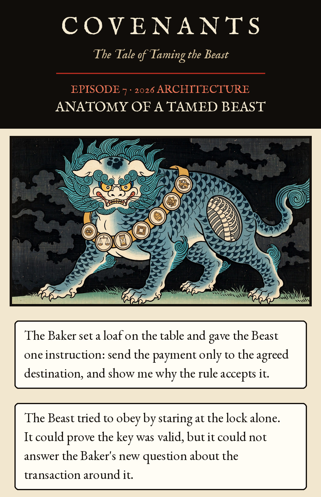
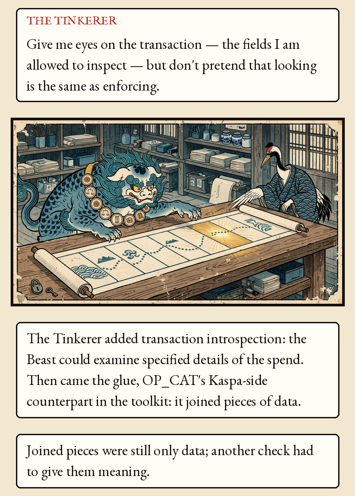
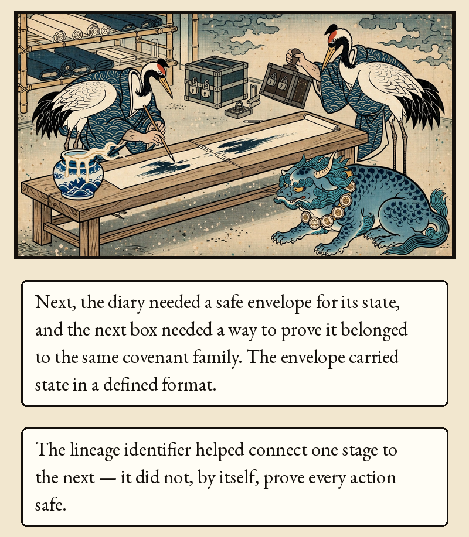
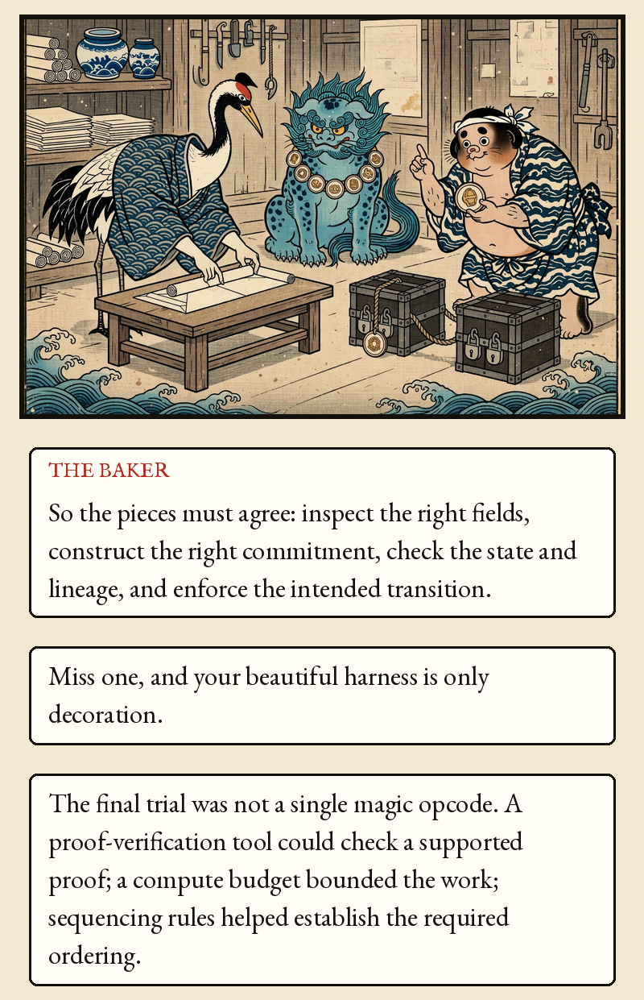
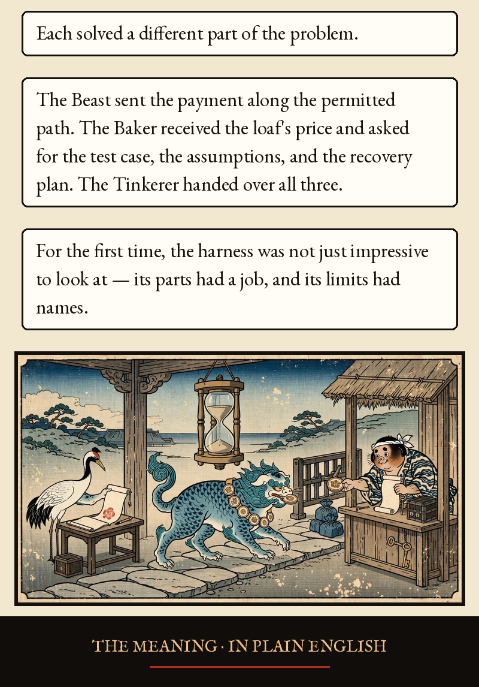
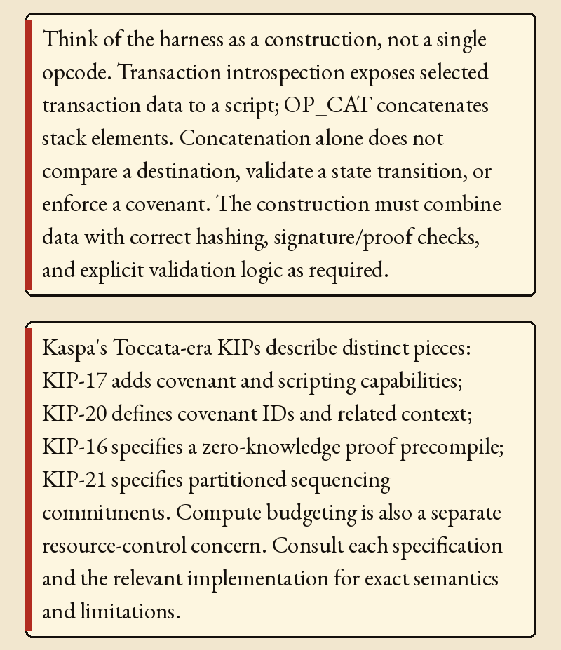
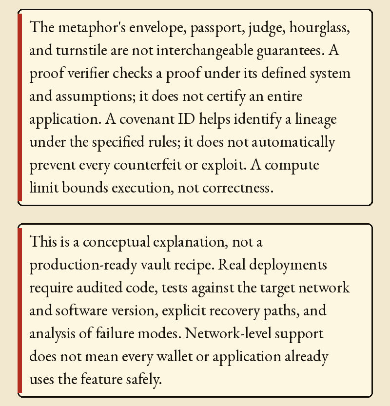
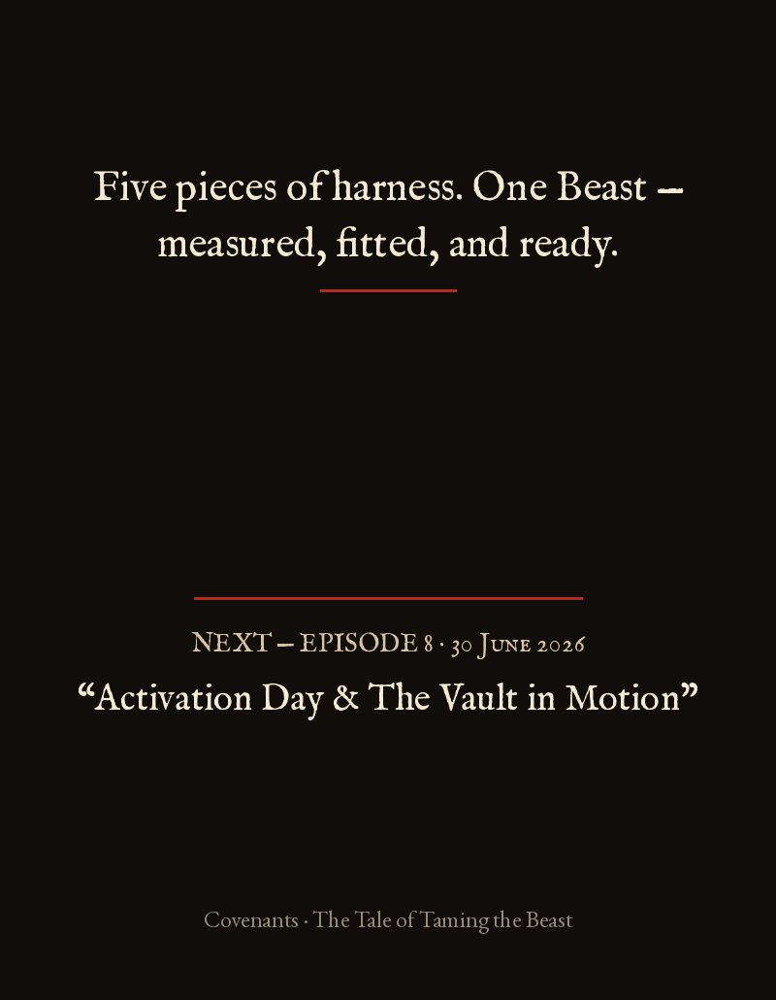

Episode 7 · Anatomy of a Tamed Beast








Episode 7 · Anatomy of a Tamed Beast — 2026 Architecture
The Baker set a loaf on the table and gave the Beast one instruction: send the payment only to the agreed destination, and show me why the rule accepts it.
The Beast tried to obey by staring at the lock alone. It could prove the key was valid, but it could not answer the Baker's new question about the transaction around it.
THE TINKERER: Give me eyes on the transaction — the fields I am allowed to inspect — but don't pretend that looking is the same as enforcing.
The Tinkerer added transaction introspection: the Beast could examine specified details of the spend. Then came the glue, OP_CAT's Kaspa-side counterpart in the toolkit: it joined pieces of data. Joined pieces were still only data; another check had to give them meaning.
Next, the diary needed a safe envelope for its state, and the next box needed a way to prove it belonged to the same covenant family. The envelope carried state in a defined format. The lineage identifier helped connect one stage to the next — it did not, by itself, prove every action safe.
THE BAKER: So the pieces must agree: inspect the right fields, construct the right commitment, check the state and lineage, and enforce the intended transition. Miss one, and your beautiful harness is only decoration.
The final trial was not a single magic opcode. A proof-verification tool could check a supported proof; a compute budget bounded the work; sequencing rules helped establish the required ordering. Each solved a different part of the problem.
The Beast sent the payment along the permitted path. The Baker received the loaf's price and asked for the test case, the assumptions, and the recovery plan. The Tinkerer handed over all three. For the first time, the harness was not just impressive to look at — its parts had a job, and its limits had names.
THE MEANING · IN PLAIN ENGLISH
Think of the harness as a construction, not a single opcode. Transaction introspection exposes selected transaction data to a script; OP_CAT concatenates stack elements. Concatenation alone does not compare a destination, validate a state transition, or enforce a covenant. The construction must combine data with correct hashing, signature/proof checks, and explicit validation logic as required.
Kaspa's Toccata-era KIPs describe distinct pieces: KIP-17 adds covenant and scripting capabilities; KIP-20 defines covenant IDs and related context; KIP-16 specifies a zero-knowledge proof precompile; KIP-21 specifies partitioned sequencing commitments. Compute budgeting is also a separate resource-control concern. Consult each specification and the relevant implementation for exact semantics and limitations.
The metaphor's envelope, passport, judge, hourglass, and turnstile are not interchangeable guarantees. A proof verifier checks a proof under its defined system and assumptions; it does not certify an entire application. A covenant ID helps identify a lineage under the specified rules; it does not automatically prevent every counterfeit or exploit. A compute limit bounds execution, not correctness.
This is a conceptual explanation, not a production-ready vault recipe. Real deployments require audited code, tests against the target network and software version, explicit recovery paths, and analysis of failure modes. Network-level support does not mean every wallet or application already uses the feature safely.
Five pieces of harness. One Beast — measured, fitted, and ready.
KIP-17: https://raw.githubusercontent.com/kaspanet/kips/master/kip-0017.md; KIP-16: https://raw.githubusercontent.com/kaspanet/kips/master/kip-0016.md; KIP-20: https://raw.githubusercontent.com/kaspanet/kips/master/kip-0020.md; KIP-21 and implementation map: https://github.com/kaspanet/docs/blob/main/content/docs/toccata/references.mdx; node guide: https://github.com/kaspanet/rusty-kaspa/blob/master/docs/toccata-guide.md. Each mechanism has separate semantics; this episode is conceptual, not a deployable contract specification.